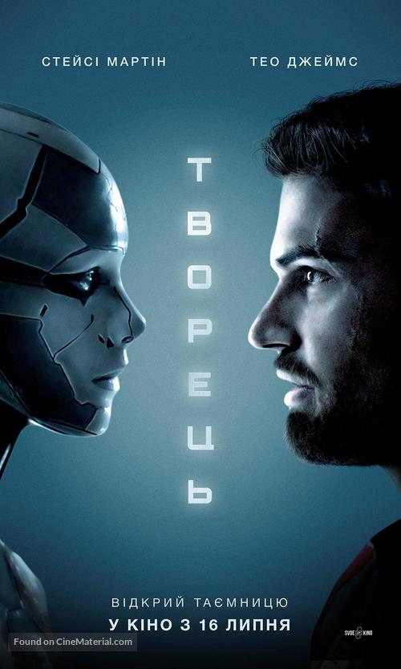
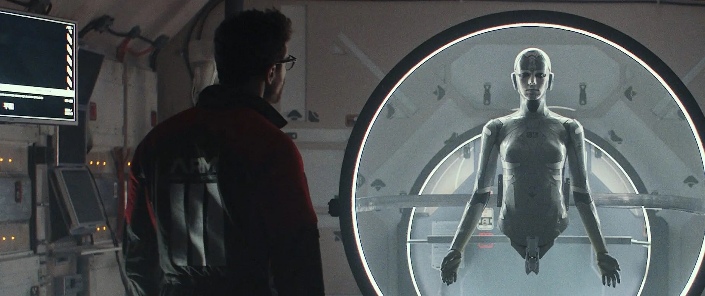
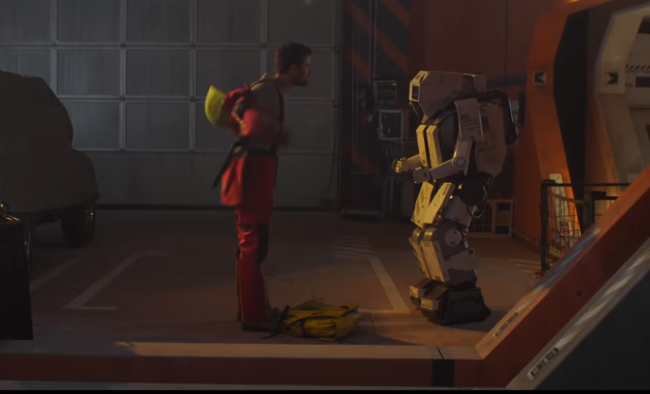
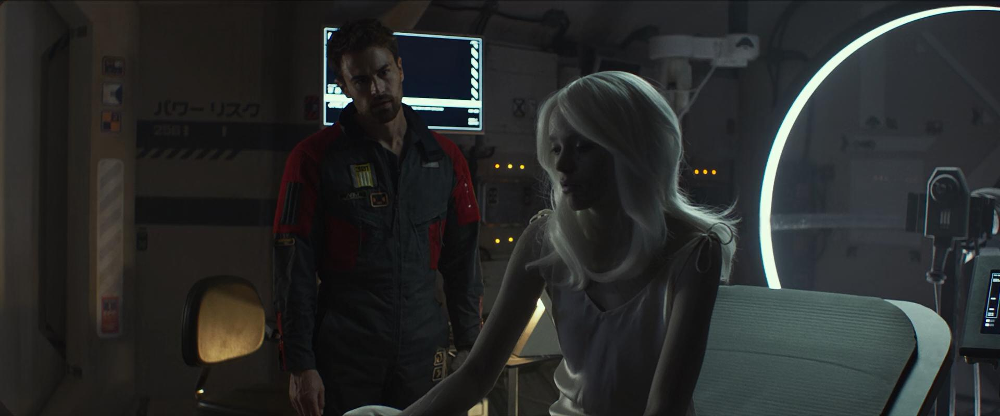

Archive

Archive is a 2020 British science fiction film written and directed by Gavin Rothery, in his directorial debut. It stars Theo James, Stacy Martin, Rhona Mitra, Peter Ferdinando, Timea Maday Kinga and Toby Jones. Archive is a 2020 British science fiction film written and directed by Gavin Rothery, in his directorial debut. It stars Theo James, Stacy Martin, Rhona Mitra, Peter Ferdinando, Timea Maday Kinga and Toby Jones.
In 2049, George Almore (Theo James) is working on a true human-equivalent AI, and his latest prototype is almost ready. This sensitive phase is also the riskiest as he has a goal that must be hidden at all costs—being reunited with his dead wife Jules, who had died in a car accident years ago. His wife's consciousness is stored in a device that, according to the sales pitch, will allow up to 200 hours of interaction with the deceased. His work also includes updates to a previously-abandoned facility that appears to require numerous and significant upgrades to its sadly-inadequate security system. His work is aided by his second prototype, J2 (Timea Maday Kinga). Almore is visited by a small team from Archive who perform an inspection of the device. They note that the security seal is broken and threaten legal action, however, Almore points out that they are on his company's property and hints at the legal repercussions of a confrontation and the Archive team backs off and leaves. J2 is shown to be quite sophisticated, but as Almore reveals, it/she has only developed the brain of a 16-year-old, and is incapable of developing any further. J2 is aware of Almore's work on a third prototype and appears to have become jealous, which leads to J2's increasingly unpredictable behavior. Meanwhile, the J3 android is ready and begins to move and interact with completely human mannerisms, responses and emotions. Almore gets a call from his boss who implies that he may be in trouble for his actions during the Archive team's visit. He assures her that she has nothing to worry about. J2, confronted with the realization that she will never be anything more or better than she already is, destroys herself by walking into a lake. This eventually prompts another call from the boss with an indication that a team is on the way to shut down his research. Almore makes the final call to his wife on the Archive machine, and ends the call saying "see you soon." J3 overhears this and realizes her purpose, and that her own consciousness will be overwritten by that of his wife who will then live on in her body. Initially angered and afraid, she accepts her fate and the memory download is completed as the team storms the compound. At this point, any sign of the exterior team suddenly evaporates, and all is calm. The Archive starts ringing with one more incoming call from his wife. J3 implores him not to answer, but he does and speaks to his wife; he then hears a child's voice who is revealed to be his daughter. In a shocking twist, it is revealed that George was the one who died while his wife had survived the accident and is raising their daughter in the real world revealing the whole ordeal George had went through was just a simulation within his own Archive that had just recently expired. With his Archive expired, it has been prepared and ordered to be buried for his official funeral. Jules and their daughter say their final goodbyes and leave.


